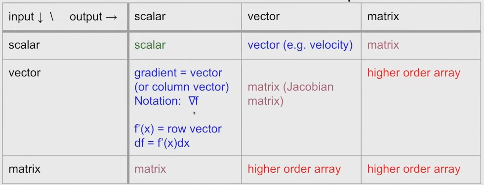

MIT 18.S096 Matrix Calculus For Machine Learning And Beyond
Notes written by Zhihan during March-April 2024 in Suzhou, Jiangsu, China
Awesome additional resources:
- Matrix Differential Calculus with Applications in Statistics and Econometrics. This is a textbook written by Jan R. Magnus and Heinz Neudecker and published in 1988. Check out Section 5.3 in which they defined the differential for scalar-to-scalar functions.
- Old and New Matrix Algebra Useful for Statistics. This is a collection of notes on Magnus and Neudecker (1988) written by Thomas P. Minka.
- Machine Learning & Simulation. This is a YouTube channel on advanced machine learning created by Felix Matteo Kohler (the "o" with double dots). Check out his videos on autodiff pushforward / pullback rules.
- Numerical optimization. This is a textbook written by Jorge Nocedal and Stephen J. Wright and published in 1999. Check out Chapter 8 in which they discussed finite-difference approximation and automatic differentiation.
To view a Jupyter notebook (ipynb), copy its link and paste it here at https://nbviewer.org/.
Lecture 1 Part 1/2: Introduction and Motivation (not much except this table)

Comments:
- Gradients of functions with matrix input and scalar input are sometimes easier to derive elementwise.
Lecture 1 Part 2/2: Derivatives as Linear Operators [PDF]
Content:
- Differential notation for scalar-to-scalar functions and vector-to-scalar functions
- Gradient of \( \mathbf{x}^T A \mathbf{x} \) wrt \( \mathbf{x} \)
Comments:
- So far vector-to-vector and matrix-to-matrix functions are not mentioned.
- I don't like the course's treatment of df and dx as "infinitesimal changes". I prefer the treatment by Magnus and Neudecker's Matrix Differential Calculus
in which they define df as the part of f(x+dx) - f(x) that's linear in dx - nothing needs to be infinitesimal; I also follow this treatment in my notes. The two treatments are somewhat equivalent, but I found the second one better for pedagogy.
Lecture 2 Part 1/2: Derivatives in Higher Dimensions: Jacobians and Matrix Functions [PDF]
Content:
- Definition of differentiability, derivative and differential for vector-to-vector functions
- Gradient of \( \mathbf{x} \odot \mathbf{x} \) wrt \( \mathbf{x} \)
- Gradient of \( \mathbf{x} \mathbf{x}^T \mathbf{x} \) wrt \( \mathbf{x} \)
- Chain rule: derivative of a composition of vector-to-vector functions
- Cauchy's rule of invariance
Comments:
- They didn't actually start on matrix functions until the next lecture.
Lecture 2 Part 2/2: Vectorization of Matrix Functions + Lecture 3 Part 1/2: Kronecker Products and Jacobians [PDF]
Content (putting two lectures together because they are so relevant to each other):
- Differential notation for matrix-to-matrix functions
- Gradient of \( A^2 \) wrt \( A \)
- Gradient of \( A^3 \) wrt \( A \)
Lecture 3 Part 2/2: Finite-Difference Approximations [PDF]
Content:
- Finite-difference approximation for vector-to-scalar functions
- Finite-difference approximation for matrix-to-matrix functions
Comments:
- I find this lecture a bit hand-wavy, so for the first part of my notes I followed Nocedal and Wright's Numerical Optimization.
Problem Set 1 [Handout] [My solution]
Lecture 4 Part 1/2: Gradients and Inner Products in Other Vector Space [PDF]
Content:
- Riesz representation theorem
- Gradient of \( ||A||_F \) wrt A
- Gradient of \( \mathbf{x}^T A \mathbf{y} \) wrt \(A\)
- Gradient of \( \sum_{ij} A_{ij} \) wrt \(A\)
Lecture 4 Part 2/2: Nonlinear Root Finding, Optimization, and Adjoint Gradient Methods [PDF]
Lecture 5 Part 1/3: Derivative of Matrix Determinant and Inverse [PDF]
Content:
- Norms and derivatives
- Derivative of matrix determinant -- Jacobi's formula \( d(\text{det}(A)) = \ldots \)
- Direct proof using Laplace expansion
- Fancy proof using the similar behavior of determinant and trace near identity
- Applications (Newton's method for finding eigenvalues, log determinant)
- Derivative of matrix inverse
Lecture 5 Part 2/3: Forward-mode Automatic Differentiation using Dual Numbers [ipynb]
Pushforward / JVP rules [PDF]
Lecture 5 Part 3/3: Differentiation on Computational Graphs [ipynb]
Pullback / VJP rules [PDF]
Lecture 6 Part 1/2: Adjoint differentiation of ODE solutions (skipped for now; need ODE review)
Lecture 6 Part 2/2: Calculus of Variations and Gradients of Functionals [PDF]
Content:
- Calculus of variations - the basic idea
- A natural definition of dot product and norm of functions
- Example: differentiating \( f(u)=\int_0^1 sin(u(x)) dx \) wrt \( u \)
- Example: differentiating the arc length formula + finding minimum using the gradient
- Generalization of the 2nd example into a 2nd-order ODE (Euler-Lagrange equation)
Problem Set 2 [Handout] [My solution]
Lecture 7 Part 1/2: Derivatives of Random Functions (fundamentally just the reparameterization trick)
Lecture 7 Part 2/2: Second Derivatives, Bilinear Forms, and Hessian Matrices [PDF]
Lecture 8 Part 1/2: Derivatives of Eigenproblems (lecture was a bit too brief)
Lecture 8 Part 2/2: Forward and Reverse-Mode Automatic Differentiation on Computational Graphs (I merged this with Lecture 5 Part 3/3)